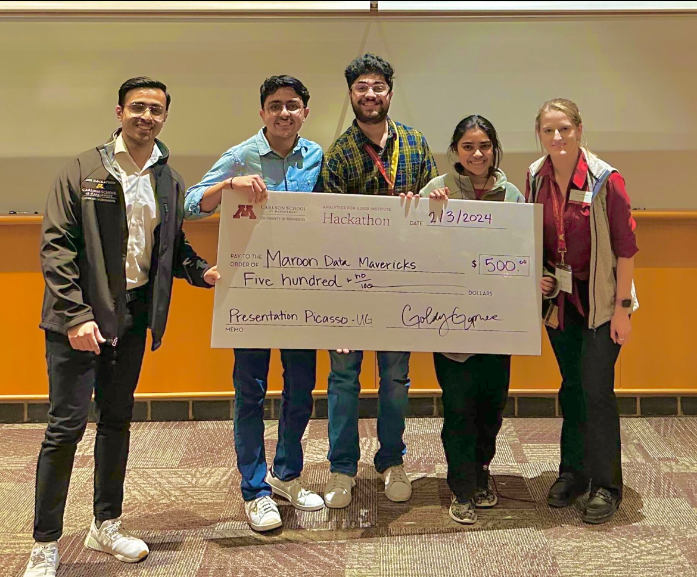
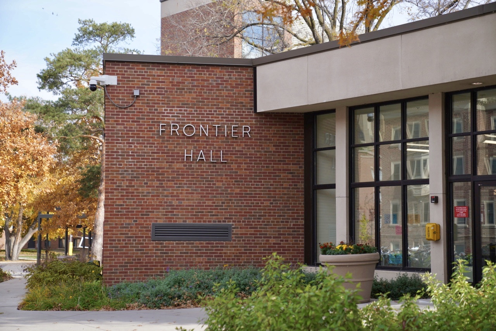

RESUME
ABOUT ME
Education

University of Minnesota, Twin Cities
Bachelor of Science in Computer Science
GPA: 3.9
Technical Experience
SAS - IDEAS REVENUE SOLUTIONS
Software Quality Assurance Intern
- AWS
- Java
- Terraform
- Gradle
- Postman
- Swagger
- Studio3T
- Enhanced API and unit testing with Postman, Swagger, and Spock to achieve 95% coverage and reduce critical bugs by 30% in production, showcasing deep testing expertise.
- Led Jenkins-based CI/CD integration, reducing deployment times by 40% and ensuring continuous delivery across teams.
- Implemented performance testing for cloud-based applications on AWS EC2 instances using Java and Gradle, leading to a 20% improvement in system responsiveness under peak load conditions.
SWARM ROBOTICS
Undergraduate Research Assistant
- ROS
- Ubuntu
- Python
- PPO
- SARSA
- Q-Learning
- Pytorch
- Reduced pathfinding steps by 25% through innovative application of Q-learning, SARSA, and A algorithms.
- Pioneered algorithmic comparisons that enhanced robotic efficiency, demonstrating 20% improvement in transactional throughput by fine-tuning SARSA and Q-learning techniques against traditional pathfinding models.
- Developed custom AI solutions that consistently achieved near-optimal navigation paths, evidenced by SARSA algorithm's reliable performance in complex dynamic environments, significantly surpassing baseline metrics..
SAM MONITORING SOLUTIONS
Software Developer Intern
- MongoDB
- Python
- AWS
- Pandas
- Designed and implemented automated data entry procedures using Python modules, reducing manual errors and increasing data accuracy for over 50 shipment records.
- Collaborated with senior developers to create a dynamic dashboard that utilizes MongoDB Aggregation Framework to provide real-time shipment tracking data, resulting in improved customer satisfaction.
- Developed a customized MongoDB database system to track current orders reducing tracking time by 30%.
CSE&UMN Minneapolis, MN
Undergraduate Teaching Assistant: Data Structures and Algorithms, Programming Principles
- Problem Solving
- Python
- Java
- C
- DSA
- Assembly
- Managed and facilitated weekly lab sessions, resulting in overall satisfaction from student evaluations.
- Collaborated with Computer Science faculty to redesign course material and improve overall student performance.
- Managed a class of over 300 students and held office hours
MANGLA IMPEX New Delhi, India
Software Developer Intern
- GUI Programming
- Python
- Tkinter
- Pandas
- MySQL
- Developed a comprehensive website with a team of three to cater to the specific needs of the company, resulting in an increase in online traffic by 40%.
- Utilized Python and GUI Programming languages to design and launch a Mangla Impex Calculator, which efficiently kept track of monthly spending and earnings, leading to a 30% reduction in errors.
- Designed graphs using data analytics tools that helped identify productivity gaps and improve overall efficiency by 15%.
- GUI Programming
- Python
- Tkinter
- Pandas
- MySQL
Other Involvements

AGI Hackathon
Best Presentation
Worked in a group to analyse the data given to us using machine learning algorithms to understand the difference in number of male and females in the tech industry
International Buddy Program
Marketing Coordinator
Worked with international students and hosted multiple events with over 100 attendees to make everyone feel welcomes. Created an inclusive environment for all the incoming students.

Office Assistant
Housing and Residential Life, UMN
Assisting students, faculty, and visitors with inquiries related to the college dorm and campus life.